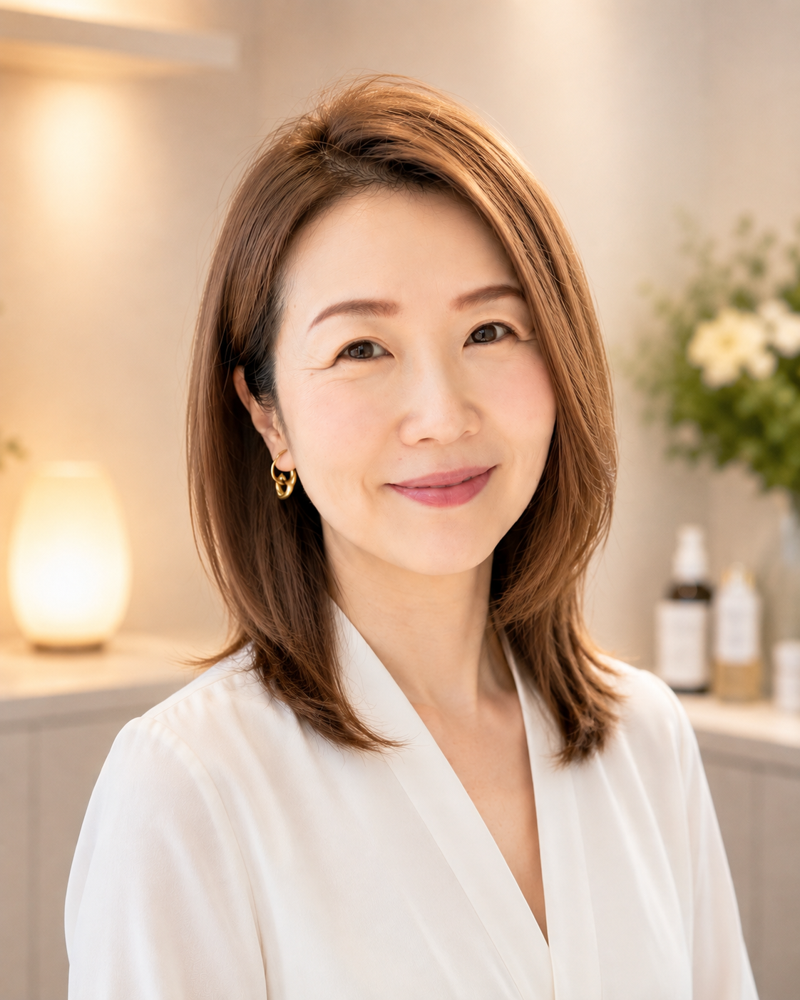

DNA解析を、あなたを知る最初の手がかりに。
SCROLL
01 CONCEPT
「なんとなく」を卒業して、
私に合うケアを。
美容やダイエットの情報はたくさんあるけれど、身体も暮らしも一人ひとり違います。
「DNA ブライトニングプラン」では、DNA解析サービスKEYCODEで体質傾向を知り、その結果を現在のお悩みや生活習慣と重ね合わせます。情報を受け取るだけで終わらせず、食・ダイエット・美容・姿勢について、あなたが取り入れやすい方向性を一緒に整理します。
※DNA解析・腸内フローラ解析は医療行為や診断ではなく、生活習慣を考えるための参考情報として活用します。
食・ダイエット・美容を暮らしに合わせて整理。
結果と暮らしを重ね、取り入れやすい方法を整理。
ご希望に応じて、施術や継続サポートをご案内。
02 PRODUCT
目的で選べる、2つのプラン
DNA
ブライトニングプラン
DNA解析の結果をもとに、今の自分を知り、これからの暮らしに取り入れやすい方法を考えるBonnchanceの商品です。
Zoomで初回プランニングを行い、3週間後にもう一度、経過を確認します。
PLAN 01
BEAUTY, HEALTH & MIND
美と健康プラン
美容・健康に加えてマインドに関わる体質傾向もDNAから幅広く解析します。解析結果と現在の暮らしやお悩みを照らし合わせ、より良い状態を目指すための取り組み方をご提案します。
DNA解析＋解析結果レポート＋Zoomセッション計2回（初回・3週間後）確認事項・お申し込みへ →PLAN 02
DIET FOCUSED
ダイエットプラン
体重管理や食生活など、ダイエットに関わる項目に絞ってDNAの体質傾向を解析します。解析結果を参考に、日々の食事や行動へ取り入れやすい方法をご提案します。
DNA解析＋解析結果レポート＋Zoomセッション計2回（初回・3週間後）確認事項・お申し込みへ →03 PRODUCT DETAILS
TWO ANALYSIS PLANS
知りたい範囲に合わせて、
2つの解析プランから。
採取したDNAから遺伝的な体質傾向を解析し、結果を現在の暮らしや目標と照らし合わせます。どちらのプランも、初回のZoomセッションで取り組み方を組み立て、3週間後のセッションで経過を確認します。
PLAN 01 / BEAUTY, HEALTH & MIND
美と健康プラン
9カテゴリー32項目
美容・健康・ダイエットに加え、マインドや行動の傾向、身体の動かし方まで幅広く確認する総合プランです。
01ダイエットの事
- 太る原因は炭水化物ではない遺伝子
- おなかがいっぱいでも目の前に何か出されたら食べてしまう遺伝子
- 油ぎとぎとの食事が好きな遺伝子
- 睡眠の量や質が悪くなると太る遺伝子
- たんぱく質が不足すると太る遺伝子
- お腹だけが出る遺伝子
- 甘いものが食べたくなる遺伝子
- 運動をしないとダイエットが難しい遺伝子
02美容の事
- シミが出来やすい遺伝子
- しわが出来やすい遺伝子
- 活性酸素が溜まりやすい遺伝子
- 顔の骨がくぼんで年をとって見える遺伝子
03健康の事
- 血液がどろどろになってリンパが詰まりやすい遺伝子
- 体温が低くなりやすい遺伝子
- 骨がもろくなりやすい遺伝子
- アレルギーやアトピーや花粉症になりやすい遺伝子
- ミネラル不足になると病気になりやすくなる遺伝子
- 疲れやすい遺伝子
- 還元型COQ10が効く遺伝子
04子育て方法
- 恋愛するとラブラブしていたい遺伝子
- 恋愛すると家族のような関係になる遺伝子
- 幸せホルモンのドーパミンがちゃんと出る遺伝子
05スポーツ適性の傾向
- 長距離向きな遺伝子
- 短距離向きな遺伝子
- ミトコンドリアの部屋がたくさんある遺伝子
06トレーニング適性の傾向
- 筋肉が付きやすい遺伝子
- 筋肉が落ちやすい遺伝子
07エステ提案の傾向
- 血液がどろどろになってリンパが詰まりやすい遺伝子
- 体温が低くなりやすい遺伝子
08痛みにつながりやすいかどうか
- 精神的な痛みに弱い遺伝子
- 根に持つ遺伝子
09性格・行動パターン
- 大皿料理でも楽しく食事ができる遺伝子
- 小皿でたくさん出てこないと楽しめない遺伝子
- 一度気に入るとずーっとそればかり着る・行く遺伝子
PLAN 02 / DIET FOCUSED
ダイエットプラン
1カテゴリ8項目
総合プランのうち、ダイエットカテゴリーの8項目に絞って解析します。食事・睡眠・運動など、体重管理に関わる自分の傾向を知りたい方に向くプランです。
- 太る原因は炭水化物ではない遺伝子
- おなかがいっぱいでも目の前に何か出されたら食べてしまう遺伝子
- 油ぎとぎとの食事が好きな遺伝子
- 睡眠の量や質が悪くなると太る遺伝子
- たんぱく質が不足すると太る遺伝子
- お腹だけが出る遺伝子
- 甘いものが食べたくなる遺伝子
- 運動をしないとダイエットが難しい遺伝子
TWO ZOOM SESSIONS
提案して終わらず、
3週間後に振り返る。
最初のセッションで無理なく取り入れられる行動を整理し、3週間後に実践状況や変化を確認します。
- 01初回プランニング
解析結果と暮らしを照らし合わせ、取り組み方を組み立てます。 - 023週間後の経過確認
実践した内容を振り返り、必要に応じて取り組み方を調整します。
解析カテゴリー・項目は、転載許可を得てKEYCODE公式「遺伝子でわかること 全32項目」の表記を掲載しています。
※DNA解析は医療行為や診断ではありません。解析結果は、生活習慣や美容を考えるための参考情報として活用します。
04 YOUR PLANNER

PLANNER PROFILE
あなたらしい一歩を、
一緒にプランニング。
エステティシャンとして18年、累計8,000人の施術に携わってきました。一人ひとり異なる身体やお悩みに向き合ってきた経験を、DNA解析結果を暮らしに生かすプランニングへつなげます。
姿勢LABO®で身につけた姿勢へのアプローチもエステティックの施術に取り入れ、肌や身体をケアするだけでなく、姿勢という観点からも美しさと健やかさを支えています。
DNA解析結果は、自分を決めつける答えではなく、生まれ持った傾向を知るための手がかりです。解析結果と今の暮らし、お悩み、目標を丁寧に照らし合わせ、食・美容・運動・姿勢など、毎日に取り入れやすい方法を一緒に組み立てます。
Zoomセッションでは、結果を一方的に説明するのではなく、お客様のお話を伺いながら、無理なく続けられる方向性を整理することを大切にしています。
- プランナー
- 原口 政代
- 資格
- INFA国際ライセンス ゴールドマスター
※DNA解析結果を参考にした生活・美容面のプランニングを行います。医療行為、診断、治療および遺伝カウンセリングを行うものではありません。
05 KNOWLEDGE & METHOD
安心してご相談いただくために
美容と姿勢、
二つの専門的な学び。
INFA
INFA国際ライセンス
ゴールドマスター
INFAは、エステティックと美容分野の教育・専門性向上に取り組む国際的な団体です。ゴールドマスターは、INFAの国際試験において85点以上を修めた成績優秀者に与えられる称号です。国際基準の理論と技術を学び、身につけた美容の知識と施術技術を、お客様一人ひとりに寄り添うケアへ生かしています。
INFA公式サイト ↗姿勢
姿勢LABO®での学び
姿勢は見た目の印象だけでなく、立つ・座る・歩くといった毎日の身体の使い方にも関わります。身体の土台となる姿勢を丁寧に見つめ、お客様の状態に合わせた施術やセルフケア、習慣づくりへつなげられるよう、現在も知識と技術を学んでいます。
※姿勢に関する技術は現在研鑽中です。医療行為や診断ではなく、提供内容は習得状況に応じてご案内します。POSTURE APPROACH
姿勢も、毎日の習慣のひとつ。
姿勢は一度整えたら終わりではなく、立ち方・座り方・歩き方など、日々の身体の使い方の積み重ねです。個別相談では生活の中で姿勢が崩れやすい場面にも目を向け、無理なく意識できるセルフケアをご提案します。
- 立ち方・座り方など日常動作の確認
- 美容や身体の印象と姿勢の関係を考える
- 施術後の状態を保つセルフケア
- 90日間サポートでの小さな姿勢習慣
06 FAQ
よくあるご質問
安心してご相談
いただくために
どの商品から始めればよいですか？
基本商品は「DNA ブライトニングプラン」です。個別相談の内容をもとに、必要な方へ施術や90日間サポートなどのオプションをご案内します。
腸内フローラ解析だけでも申し込めますか？
腸内フローラ解析は、①の分析・提案内容を強化する追加オプションとしてご用意しています。①と組み合わせてお申し込みください。
DNA解析で病気の診断はできますか？
いいえ。DNA解析サービスKEYCODEのDNA解析および腸内フローラ解析は医療診断ではありません。結果は食生活や美容習慣を考えるための参考情報として使用します。
90日間のサポートでは何をしますか？
月2回の個別相談と週1回のチェックを基本に、小さな習慣を設定します。できなかった場合も責めることなく、暮らしに合う方法へ一緒に調整します。
90日間終了後もサポートを続けられますか？
はい。90日終了時に取り組みを振り返り、ご希望と今後の目標に応じてサポート期間を延長できます。延長期間や料金は個別にご案内します。
どのくらいで効果を実感できますか？
体質や生活習慣により個人差があります。効果を保証するものではなく、無理なく継続できる習慣づくりを大切にしています。
CONTACT
まずは、あなたのお話を
聞かせてください。
メニューや料金についてのご質問も、お気軽にどうぞ。